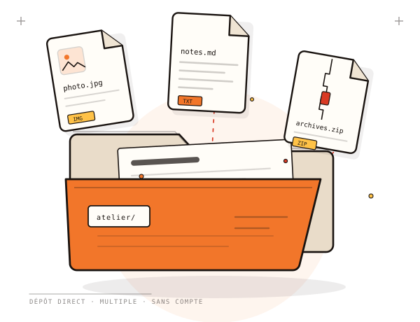

01 / FICHIERSFichiers
Les fichiers restent des fichiers.
Arborescence réelle, aperçus, recherche, corbeille. Ce que vous déposez existe dans un dossier ordinaire, pas dans un format propriétaire.
- Dépôt multiple, glisser-déposer et pièces jointes.
- Aperçu image, vidéo, audio, PDF et texte.
- Téléchargement avec reprise, noms assainis, corbeille récupérable.